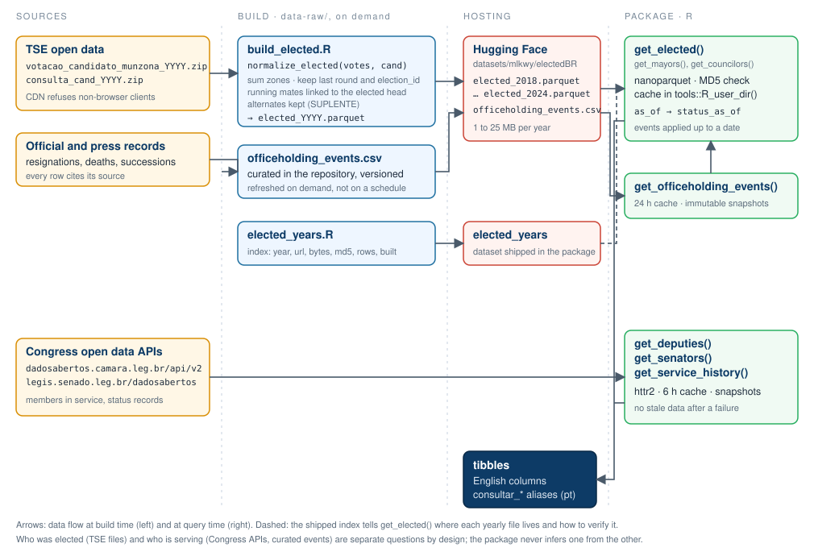

electedBR answers two different questions about Brazilian politics and keeps them apart:
- Who was elected? Candidates elected in municipal (2020, 2024) and general (2018, 2022) elections, from president and governors to councilors, running mates included, consolidated from the open data of the Superior Electoral Court (TSE) into one small Parquet file per year, hosted on Hugging Face.
- Who is serving now? Federal deputies and senators currently in service, from the open data APIs of the Chamber of Deputies and the Federal Senate, plus the official service history of each member. For mayors and governors, who have no such API, a curated table of office-holding events (resignations, successions) can be applied to the election results as of a date.
Every function returns a tibble with English column names, and every function has a Portuguese alias.
Election results
library(electedBR)
# Mayors elected in Pernambuco in 2024
get_mayors(state = "PE", municipality = c("Recife", "Caruaru"))
consultar_prefeitos(uf = "PE", municipio = c("Recife", "Caruaru"))
# Councilors, by party, including the alternates classified by the TSE
get_councilors(state = "PE", municipality = "Recife", party = c("PT", "PSB"),
include_alternates = TRUE)
# General elections: statewide and nationwide offices
get_elected(2022, state = "PE", office = "federal_deputy")
get_elected(2022, state = "PE", office = c("governor", "vice_governor"))
get_elected(2022, office = c("president", "vice_president"))
consultar_eleitos(2022, uf = "PE", cargo = "SENADOR")The first query for a year downloads its file (about 1 MB for a general election, up to 25 MB for a municipal one) into tools::R_user_dir("electedBR", "cache"); later queries read the local copy. elected_years lists the files, their checksums and build dates.
Columns: year, election_id, round, state, municipality_tse_id, municipality, office, candidate_id, ticket_candidate_id, name, ballot_name, party_at_election, election_status, votes, reference.
What the results mean:
- Votes are summed over electoral zones and, for statewide offices, over municipalities; the municipal columns are then
NAandmunicipalitycannot be used as a filter. President and vice president havestate = NAtoo (votes summed nationwide, including votes cast abroad). - Running mates (vice president, vice governors, vice mayors) have no votes of their own: they come from the TSE candidates file, with
votes = NAandticket_candidate_idpointing to the head of their ticket. - The last round available for each candidate is kept, and elections with different TSE codes (ordinary and supplementary polls) are never merged.
-
include_alternates = TRUEadds theSUPLENTErows of the TSE file. This is the classification at the poll, not a current substitution queue, and Senate ticket alternates (who have no votes of their own) are not covered. - Municipality names are matched exactly, ignoring accents and case; codes are TSE codes, not IBGE codes.
party_at_electionis the party at the time of the election. - Being elected does not mean being in office today: use the functions below for that.
normalize_elected() is the function that builds the yearly files and is exported, so the same rules can be applied to a fresh TSE download (for example from electionsBR).
Who holds the office on a given date?
The TSE files describe the poll and never change afterwards. Resignations, deaths, removals and successions are recorded in a small curated table, get_officeholding_events(), served next to the yearly files and updated on demand (every row cites its source; pull requests are welcome). as_of applies it:
# Recife: the mayor elected in 2024 resigned on 2026-04-02 to run for
# governor; the vice mayor took office on 2026-04-06
get_elected(state = "PE", municipality = "Recife",
office = c("mayor", "vice_mayor"), as_of = "2026-06-01")
#> status_as_of: "resignation" for the mayor, "succession" for the vice mayor,
#> whose office_as_of becomes "mayor"An official without a recorded event gets status_as_of = "no_change_recorded", which means exactly that, not that they are in office.
Sitting members of Congress
get_senators(state = "PE")
get_deputies(state = c("PE", "PB"), party = "PSB", role = "alternate")
consultar_deputados(uf = "PE", condicao = "suplente")
senators <- get_senators(state = "PE")
get_service_history(senators$person_id[[1]])
consultar_historico_exercicio("camara:204379")-
mandate_role(principal,alternate,unknown) is the electoral condition;exercise_statusis the service status. Alternates currently serving are listed. Columns ending in_rawkeep the source label. -
person_idis namespaced by house (camara:204379,senado:5322); it is not a TSE identifier and no matching by name is attempted between sources. - The Senate publishes service periods (
record_type = "service_period", withexercise_startandexercise_end); the Chamber publishes status records (record_type = "status_record", withrecord_at). The package preserves the difference instead of inferring dates. - Results are cached for six hours (
max_age_hours,refresh = TRUE), and every completed collection is kept as an immutable snapshot undercache_dir/snapshots/. A network or schema failure raises an error rather than returning expired data. - Without
state,get_deputies()issues one detail request per deputy; the first national call takes a few minutes.
| English | Portuguese |
|---|---|
get_elected(), get_mayors(), get_councilors()
|
consultar_eleitos(), consultar_prefeitos(), consultar_vereadores()
|
get_deputies(), get_senators()
|
consultar_deputados(), consultar_senadores()
|
get_service_history() |
consultar_historico_exercicio() |
get_officeholding_events() |
consultar_eventos_exercicio() |
normalize_elected(), elected_clear_cache()
|
normalizar_eleitos(), limpar_cache_eleitos()
|
year, state, municipality, office, party
|
ano, uf, municipio, cargo, partido
|
include_alternates, refresh, max_age_hours
|
incluir_suplentes, atualizar, validade_horas
|
as_of, events
|
data_referencia, eventos
|
status = "serving", role = "principal"/"alternate"
|
situacao = "em_exercicio", condicao = "titular"/"suplente"
|
Both interfaces return the same tibbles, with English columns.
Architecture

Election results are built on demand from the TSE files (which change only when the TSE publishes or revises them) and hosted outside the package; office-holding changes live in a curated table that can be refreshed without a package release; sitting members of Congress are queried live with a short cache. The three never feed each other.
Data sources
- TSE, Resultados and Candidatos: https://dadosabertos.tse.jus.br/dataset/resultados-2024, https://dadosabertos.tse.jus.br/dataset/candidatos-2024 (and 2018, 2020, 2022). Yearly files and events table: https://huggingface.co/datasets/mlkwy/electedBR.
- Chamber of Deputies open data API: https://dadosabertos.camara.leg.br/swagger/api.html
- Federal Senate open data: https://legis.senado.leg.br/dadosabertos/
Related packages
- electionsBR downloads the raw TSE files (candidates, votes by zone and section, coalitions, assets).
- congressbr wraps the Chamber and Senate APIs for bills, votes and speeches.
Citation
citation("electedBR")Code of conduct
Please note that this project is released with a Contributor Code of Conduct. By participating you agree to abide by its terms.